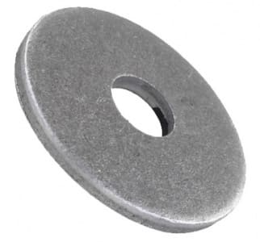

DIN 1052 Шайба увеличенная
Стандарт
DIN 1052
Цена от
45,63 ₽
Размерный ряд
: от М12 до М24
Шайбы металлические, кольца » DIN 1052 Шайбы увеличенные плоские подкладные по дереву для бруса
Варианты и размеры (5)
| Наименование | Размер | Длина, мм | Материал | Покрытие | Цена |
|---|---|---|---|---|---|
| DIN 1052 Шайба увеличенная M12 L=14мм | M12 | 14 | 71,90 ₽ | ||
| DIN 1052 Шайба увеличенная M16 L=18мм | M16 | 18 | 92,90 ₽ | ||
| DIN 1052 Шайба увеличенная M20 L=23мм | M20 | 23 | 117,00 ₽ | ||
| DIN 1052 Шайба увеличенная M22 L=25мм | M22 | 25 | 129,00 ₽ | ||
| DIN 1052 Шайба увеличенная M24 L=27мм | M24 | 27 | 142,00 ₽ |